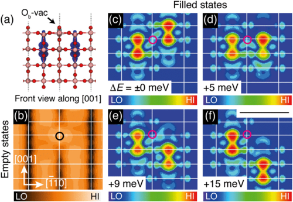
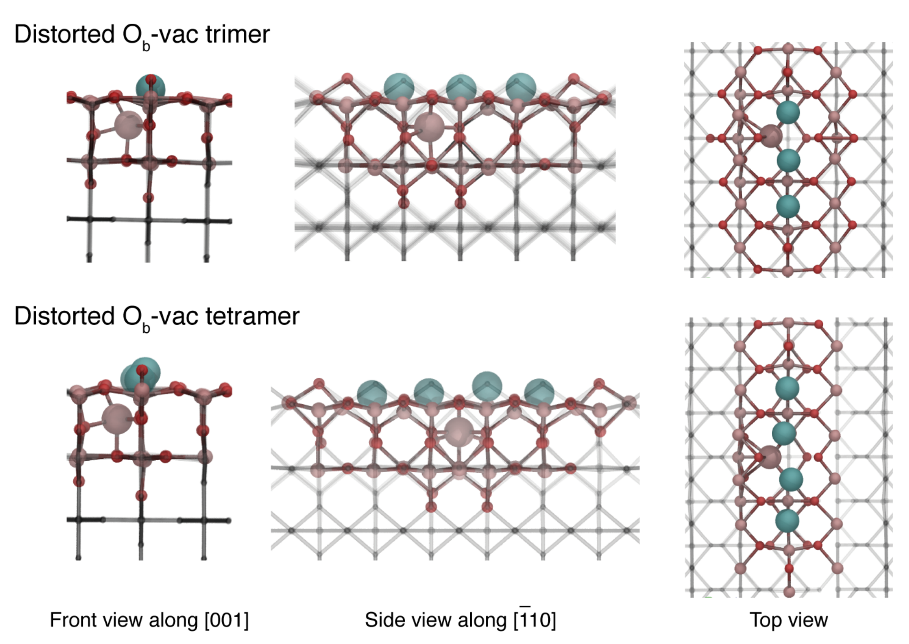
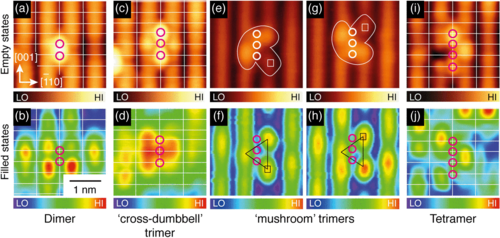
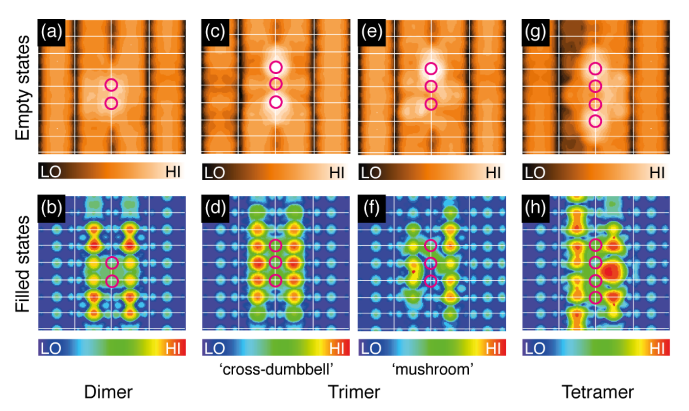
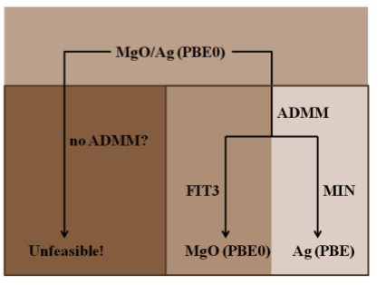
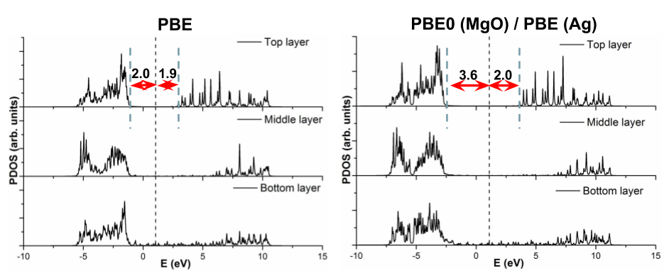

Why do we need hybrids?¶
Practical motivations¶
Improved description of thermochemistry (e.g. atomizations energies, heats of formation)
Improved description of lattice constants, surface energies, ionization potentials and band gaps
Qualitatively correct description of localized and correlated states
Theoretical motivations¶
Adiabatic connection
1-e energy level discontinuity
Why do we need hybrids?¶
| Functional | MAE (G2) / eV |
|---|---|
| SVWN | 5.2 |
| LSD (SVWN5) | 3.6 |
| PBE | 0.73 |
| BLYP | 0.31 |
| B3LYP | 0.13 |
| PBE0 | 0.21 |
Mean Absolute errors for atomization energies (eV)
Scuseria et al., J. Chem. Phys., 110, 5029 (1999)
Why do we need hybrids?¶
| Statistic | LSDA | PBE | TPSS | HSE |
|---|---|---|---|---|
| ME | -1.14 | -1.13 | -0.98 | -0.17 |
| MAE | 1.14 | 1.13 | 0.98 | 0.17 |
| rms | 1.24 | 1.25 | 1.12 | 0.34 |
| Max (+) | - | - | - | 0.32 |
| Max (-) | -2.30 | -2.88 | -2.66 | -0.72 |
Mean Absolute errors for Band Gaps (eV)
Scuseria et al., J. Chem. Phys., 123, 174101 (2005)
Hybrid Functionals with CP2K¶
- GGA: total energy functional of the electron density
- hybrid: functional of density and two particle density matrix (orbitals)
Guidon, Hutter and VandeVondele, J. Chem. Theory Comput., 6, 2348 (2010)
Hybrid Functionals with CP2K¶
- Hartree-Fock exchange energy
Four-centre two-electron integrals (ERIs) in Mulliken motation: naively $O(N^4)$ scaling
Hybrid Functionals with CP2K¶
- permutation symmetry of the ERIs
$O(N^4) \to \frac{1}{8}O(N^4)$
Guidon et al., J. Chem. Phys., 128, 214104 (2008)
Hybrid Functionals with CP2K¶
- Integral screening: Schwarz inequality
$\frac{1}{8}O(N^4) \to O(N^2)$
Ahlrichs et al., J. Comput. Chem., 10, 104 (1989)
(see EPS_SCHWARZ keyword in &SCREENING subsection)
Guidon et al., J. Chem. Phys., 128, 214104 (2008)
Hybrid Functionals with CP2K¶
- Density matrix screening
where
$$ P_{\text{max}} = \text{max}\{|P_{\mu \lambda}|, |P_{\mu \sigma}|, |P_{\nu \lambda}|, |P_{\nu \sigma}|\} $$finally linear scaling
$$ O(N^2) \to O(N) $$(see SCREEN_ON_INITIAL_P keyword in &SCREENING subsection)
Guidon et al., J. Chem. Phys., 128, 214104 (2008)
$P_{max}$: largest density matrix element; usually, the density matrix from the previous SCF iteration is used for the screening in the next iteration, use pre-converged GGA density matrix; very useful for DFT molecular dynamics simulations using hybrid functionals
Interaction Potential¶
$$ (\mu \nu | \lambda \sigma) = \int \int \phi_{\mu}(\mathbf{r_1})\phi_{\nu}(\mathbf{r_1}) g\big(|\mathbf{r_1} - \mathbf{r_2}|\big) \phi_{\lambda}(\mathbf{r_2})\phi_{\sigma}(\mathbf{r_2}) \text{d}\mathbf{r_1}\text{d}\mathbf{r_2} $$- Standard Coulomb potential gives a global hybrid
(see POTENTIAL_TYPE keyword in &INTERACTION_POTENTIAL subsection)
Guidon et al., J. Chem. Phys., 128, 214104 (2008)
For gas-phase, this energy is easy to evaluate; for periodic boundary conditions, it suffers from the integratable singularity, different approaches have been developed to obtain good convergence with respect to the $k$-point sum.
Interaction Potential¶
$$ (\mu \nu | \lambda \sigma) = \int \int \phi_{\mu}(\mathbf{r_1})\phi_{\nu}(\mathbf{r_1}) g\big(|\mathbf{r_1} - \mathbf{r_2}|\big) \phi_{\lambda}(\mathbf{r_2})\phi_{\sigma}(\mathbf{r_2}) \text{d}\mathbf{r_1}\text{d}\mathbf{r_2} $$- Range-separated Coulomb potential gives a range-separated hybrid
used in HSE06 etc.
(see POTENTIAL_TYPE keyword in &INTERACTION_POTENTIAL subsection)
Guidon et al., J. Chem. Phys., 128, 214104 (2008)
If omega is not large enough very large cells might be needed for HSE calculations at the $\Gamma$ point.
Costs are very different from plane-wave implementions - HSE is not typically cheaper than PBE0 - see next slide.
Interaction Potential¶
$$ (\mu \nu | \lambda \sigma) = \int \int \phi_{\mu}(\mathbf{r_1})\phi_{\nu}(\mathbf{r_1}) g\big(|\mathbf{r_1} - \mathbf{r_2}|\big) \phi_{\lambda}(\mathbf{r_2})\phi_{\sigma}(\mathbf{r_2}) \text{d}\mathbf{r_1}\text{d}\mathbf{r_2} $$- truncated Coulomb potential gives a global hybrid
used in the snappily titles PBE0-TC family of functionals.
$R_C$ is specified by the CUTOFF_RADIUS keyword.
(see POTENTIAL_TYPE keyword in &INTERACTION_POTENTIAL subsection)
Guidon et al., J. Chem. Phys., 128, 214104 (2008)
Truncation is mainly for solid-state environments and avoids numerical problems with $\Gamma$ point global hybrid calculations.
$R_C$ must be smaller than half the smallest cell dimension.
Requires a T_C_G_DATA file - by default in /cp2k/data and a modern installation should just find it.
Interaction Potential¶
$$ (\mu \nu | \lambda \sigma) = \int \int \phi_{\mu}(\mathbf{r_1})\phi_{\nu}(\mathbf{r_1}) g\big(|\mathbf{r_1} - \mathbf{r_2}|\big) \phi_{\lambda}(\mathbf{r_2})\phi_{\sigma}(\mathbf{r_2}) \text{d}\mathbf{r_1}\text{d}\mathbf{r_2} $$- truncated Coulomb potential gives a global hybrid
We can add in a long range correction, to replace the exchange energy lost by truncation.
See the &PBE_HOLE_T_C_LR subsection in the &XC_FUNCTIONAL section.
This gives the even more snappily titled PBE0-TC-LRC family of functionals.
Guidon et al., J. Chem. Theory Comput., 5, 3010 (2008)
Auxiliary Density Matrix Methods (ADMM)¶
$$ E[\rho] = T_S[\rho] + J[\rho] + E_{XC}[\rho, P] + \int v(\mathbf{r})\rho(\mathbf{r})\text{d}\mathbf{r} $$$$ E_{XC} = \alpha E_X^{HFX}[P] + (1 - \alpha ) E_X^{DFT}[\rho] + E_C^{DFT}[\rho] $$$$ E_X^{HFX} [P] = -\frac{1}{2} \sum_{\lambda \sigma \mu \nu} P^{\mu \sigma} P^{\nu \sigma} (\mu \nu | \lambda \sigma) $$introduce auxiliary density matrix $\hat{P}\approx P$
\begin{align} E_X^{HFX} [P] & = E_X^{HFX}[\hat{P}] + E_X^{HFX}[P] - E_X^{HFX}[\hat{P}]\\ & \approx E_X^{HFX}[\hat{P}] + E_X^{DFT}[P] - E_X^{DFT}[\hat{P}] \end{align}Guidon, Hutter and VandeVondele, J. Chem. Theory Comput., 6, 2348 (2010)
Auxiliary Density Matrix Methods (ADMM)¶
- total energy functional of both $P$ and $\hat{P}$
- still Kohn-Sham theory with ADMM
using a chain rule and
$$ K_{total} C = SC\epsilon $$as the equation to be solved self-consistently. (Simplest case given here, ADMM1)
Guidon, Hutter and VandeVondele, J. Chem. Theory Comput., 6, 2348 (2010)
Auxiliary Density Matrix Methods (ADMM)¶
- Construction of auxiliary density matrix
- we find the $\hat{C}$ that minimises the difference between occupied wavefunctions in the primary and secondary basis sets:
(see ADMM_PURIFICATION_METHOD=NONE keyword in &AUXILIARY_DENSITY_MATRIX_METHOD subsection)
Guidon, Hutter and VandeVondele, J. Chem. Theory Comput., 6, 2348 (2010)
Auxiliary Density Matrix Methods (ADMM)¶
- Construction of auxiliary density matrix enforcing indempotent auxiliary density matrix
- we find the $\hat{C}$ that minimises the difference between occupied wavefunctions in the primary and secondary basis sets subject to the constraint that the auxiliary wavefunctions are orthonormal:
The $\Lambda$ matrix contains the Lagrangian multipliers enforcing orthonormality.
(see ADMM_PURIFICATION_METHOD=MO_DIAG keyword in &AUXILIARY_DENSITY_MATRIX_METHOD subsection)
Guidon, Hutter and VandeVondele, J. Chem. Theory Comput., 6, 2348 (2010)
Auxiliary Density Matrix Methods (ADMM)¶
- Construction of auxiliary density matrix constraint on total charge
(see EXCH_SCALING_MODEL keyword in &AUXILIARY_DENSITY_MATRIX_METHOD subsection)
Merlot et al., J. Chem. Phys., 141, 094101 (2014)
ADMM forces¶
$$ \frac{dE}{d \mathbf{R}} = \frac{dE[P]}{d \mathbf{R}} + \frac{d\hat{E}[\hat{P}]}{d \mathbf{R}} $$where $\hat{P}$ is defined via $\hat{C} = AC$. Then various chain rules ...
$$ \frac{d\hat{E}[\hat{P}]}{d \mathbf{R}} + \frac{d\hat{E}[\hat{P}]}{d \hat{C}}\frac{\hat{C}}{d \mathbf{R}} = \hat{U} \frac{\hat{C}}{d \mathbf{R}} $$$$ \hat{U} = \frac{d\hat{E}[\hat{P}]}{d \hat{C}} = \frac{d\hat{E}[\hat{P}]}{d \hat{P}}\frac{d\hat{P}}{d \hat{C}} = \hat{K} \hat{C} $$finally
$$ \frac{d\hat{E}[\hat{P}]}{d \mathbf{R}} = \hat{U}_{ab}\Big[ \frac{dA}{d \mathbf{R}} C \Lambda^{-1/2} \Big]_{ab} + \hat{U}_{ab} \Big[ AC \frac{d \Lambda^{-1/2}}{d \mathbf{R}} \Big]_{ab} $$Forces for MO_Diag and non-purified ADMM implemented. Linear algebra can get expensive for larger systems (reason for contracted auxiliary basis sets)
Auxiliary Density Matrix Methods (ADMM)¶
- several GGA exchange corrections using different functionals
DFT can be B88, PBE, OPTX, KT3X
(see EXCH_CORRECTION_FUNC keyword in &AUXILIARY_DENSITY_MATRIX_METHOD subsection)
ADMM basis sets¶
Initially available from H to Cl optimized against atomic calculations
Choice of auxiliary basis set for ADMM
- FIT3: three Gaussian exponents for each valence orbital
- cFIT3: a contraction of FIT3
- pFIT3: FIT3 + polarization functions
- cpFIT3: cFIT3 + polarization functions
- aug-FIT3, aug-cFIT3, aug-pFIT3, aug-cpFIT3: augmented with a “diffuse” function
(see $CP2K/cp2k/data/BASIS_ADMM)
Guidon, Hutter and VandeVondele, J. Chem. Theory Comput., 6, 2348 (2010)
ADMM basis sets¶
Uncontracted basis sets for transition metals:
- FIT10: 4s + 3p + 3d
- FIT11: 4s + 3p + 3d + 1f
- FIT12: 4s + 3p + 4d + 1f
- FIT13: 4s + 4p + 4d + 1f
Contracted basis sets (double-$\zeta$ quality)
- cFIT10 / cFIT11 / cFIT12 / cFIT13
Names of the ADMM basis sets for main group elements will differ slightly, and usually the first ADMM basis set will not contain polarisation function.
(see $CP2K/cp2k/data/BASIS_ADMM_MOLOPT)
Ling & Slater, unpublished
General remarks¶
- Always check the convergence of CUTOFF
- Always check the convergence of properties (e.g. lattice parameters, band gaps) with respect to supercell sizes
- Always start from pre-converged GGA (e.g. PBE) wavefunction and geometry
- Always check the convergence of primary and ADMM basis sets
- start from a small basis and gradually increase the size
- ADMM has only been implemented for use with GPW
- Only ADMM1 will work with some other functionality (smearing, TDDFPT)
Example: Diamond band-gap¶
| method | number of integrals | gap [eV] |
|---|---|---|
| PBE (PBS) | 4.17 | |
| PBE (ABS) | 4.37 | |
| PBE0 (PBS) | 40, 787, 850, 778, 591 | 6.07 |
| PBE0 (ABS) | 23, 561, 509, 497 | 6.25 |
| PBE0 ADMM1 | 24, 816, 897, 009 | 6.03 |
| PBE0 ADMM2 | 24, 795, 460, 638 | 6.02 |
Guidon, Hutter and VandeVondele, J. Chem. Theory Comput., 6, 2348 (2010)
Example: Silicon band-gap¶
| Cutoff Radius [nm] | Band gap [eV] | # Integrals |
|---|---|---|
| 0.2 | 1.16 $^a$ | 77799946176 $^a$ |
| 0.4 | 1.54 $^a$ | 154325979000 $^a$ |
| 0.6 | 1.71 $^a$ | 265868148312 $^a$ |
| 0.8 | 1.78 $^a$ | 422457823080 $^a$ |
PBE0-TC-LRC with cFIT3 ADMM basis, 3x3x3 supercell, 216 atoms
| ADMM basis | Band gap [eV] | # Integrals |
|---|---|---|
| cFIT3 | 1.16 $^a$ | 422457823080 $^a$ |
| FIT3 | 1.80 $^a$ | 424426850352 $^a$ |
| pFIT3 | 1.98 $^a$ | 1447428361680 $^a$ |
| Ref. (VASP) | 1.93 $^b$ |
PBE0-TC-LRC with 8 Å cutoff radius, 3x3x3 supercell, 216 atoms
$^a$ Ling & Slater, unpublished; $^b$ Paier et al., J. Chem. Phys. 124, 154709 (2006)
Functionals¶
- PBE0-TC-LRC, Long Range Corrected truncated global hybrid
Guidon et al., J. Chem. Theory Comput., 5, 3010 (2008) Spencer & Alavi, Phys. Rev. B, 77, 193110 (2008)
- HSE, Range separated hybrid
Scuceria et al., J. Chem. Phys., 125, 224106 (2006)
"Empirical" parameters: $a, R_c,$ and $\omega$
(note the 0 in PBE0 stands for 0 empirical parameters...)
Input structure¶
Sketch of the key sections for running an ADMM calculation
&DFT
…
BASIS_SET_FILE_NAME ./BASIS_MOLOPT
BASIS_SET_FILE_NAME ./BASIS_ADMM
WFN_RESTART_FILE_NAME ${project}-RESTART.wfn
...
&SCF
...
SCF_GUESS RESTART
...
&END SCF
&AUXILIARY_DENSITY_MATRIX_METHOD
METHOD BASIS_PROJECTION
ADMM_PURIFICATION_METHOD MO_DIAG
&END AUXILIARY_DENSITY_MATRIX_METHOD
...
&XC
...
&END XC
&END DFT
&SUBSYS
&KIND Si
BASIS_SET DZVP-MOLOPT-SR-GTH
AUX_FIT_BASIS_SET FIT3
POTENTIAL GTH-PBE-q4
&END KIND
&END SUBSYS
PBE0 vs HSE¶
Input structure
&XC
&XC_FUNCTIONAL
&PBE
SCALE_X 0.75
SCALE_C 1.0
&END PBE
&PBE_HOLE_T_C_LR
CUTOFF_RADIUS 2.0
SCALE_X 0.25
&END PBE_HOLE_T_C_LR
&END XC_FUNCTIONAL
&HF
&SCREENING
EPS_SCHWARZ 1.0E-6
SCREEN_ON_INITIAL_P FALSE
&END SCREENING
&INTERACTION_POTENTIAL
POTENTIAL_TYPE TRUNCATED
CUTOFF_RADIUS 2.0
T_C_G_DATA ./t_c_g.dat
&END INTERACTION_POTENTIAL
&MEMORY
MAX_MEMORY 2400
EPS_STORAGE_SCALING 0.1
&END MEMORY
FRACTION 0.25
&END HF
&END XC
&XC
&XC_FUNCTIONAL
&PBE
SCALE_X 0.0
SCALE_C 1.0
&END PBE
&XWPBE
SCALE_X -0.25
SCALE_X0 1.0
OMEGA 0.11
&END XWPBE
&END XC_FUNCTIONAL
&HF
&SCREENING
EPS_SCHWARZ 1.0E-6
SCREEN_ON_INITIAL_P FALSE
&END SCREENING
&INTERACTION_POTENTIAL
POTENTIAL_TYPE SHORTRANGE
OMEGA 0.11
&END INTERACTION_POTENTIAL
&MEMORY
MAX_MEMORY 2400
EPS_STORAGE_SCALING 0.1
&END MEMORY
FRACTION 0.25
&END HF
&END XC
(see examples in $CP2K/cp2k/tests/QS/regtest-admm-1/2/3/4)
Output¶
Step Update method Time Convergence Total energy Change
HFX_MEM_INFO| Est. max. program size before HFX [MiB]: 563
*** WARNING in hfx_energy_potential.F:600 :: The Kohn Sham matrix is not ***
*** 100% occupied. This may result in incorrect Hartree-Fock results. Try ***
*** to decrease EPS_PGF_ORB and EPS_FILTER_MATRIX in the QS section. For ***
*** more information see FAQ: https://www.cp2k.org/faq:hfx_eps_warning ***
HFX_MEM_INFO| Number of cart. primitive ERI's calculated: 218851035670
HFX_MEM_INFO| Number of sph. ERI's calculated: 152193561473
HFX_MEM_INFO| Number of sph. ERI's stored in-core: 22711518963
HFX_MEM_INFO| Number of sph. ERI's stored on disk: 0
HFX_MEM_INFO| Number of sph. ERI's calculated on the fly: 0
HFX_MEM_INFO| Total memory consumption ERI's RAM [MiB]: 21290
HFX_MEM_INFO| Whereof max-vals [MiB]: 1516
HFX_MEM_INFO| Total compression factor ERI's RAM: 8.14
HFX_MEM_INFO| Total memory consumption ERI's disk [MiB]: 0
HFX_MEM_INFO| Total compression factor ERI's disk: 0.00
HFX_MEM_INFO| Size of density/Fock matrix [MiB]: 764
HFX_MEM_INFO| Size of buffers [MiB]: 118
HFX_MEM_INFO| Number of periodic image cells considered: 7
HFX_MEM_INFO| Est. max. program size after HFX [MiB]: 1549
1 OT DIIS 0.80E-01 82.1 0.00000107 -17361.4683416734 -1.74E+04
2 OT DIIS 0.80E-01 43.3 0.00000085 -17361.4683473031 -5.63E-06
Number of sph. ERI's calculated on the fly: should ideally be zero.
We want to keep ERIs in memory during the SCF loop.
Extra remarks¶
Libint library is used to calculate ERIs and their analytic derivatives, see $CP2K/cp2k/INSTALL for more details on installation and linking with CP2K
Hybrid DFT calculations of large systems are memory demanding, try to increase MAX_MEMORY or run the job with more MPI processes. Note MAX_MEMORY is the memory per MPI process for ERIs, you must leave space for operating system and rest of the CP2K calculation.
For extremely large hybrid DFT calculations, try hybrid MPI/OpenMP binary (i.e. cp2k.psmp)
Examples¶
TiO$_2$ is everyone's favourite material - hybrid calculations with ~1000 atoms and good basis sets using CP2K
|  |  |
|  |  |
Yim et al, Phys. Rev. Lett. 117, 116402 (2016)
Fun and games¶
ADMM is not just an approximation to full hybrid DFT, but can be used in other ways
- embedding: smaller basis sets / no basis sets on some atoms
|  |  |
Ling et al. "Effects of oxide roughness at metal oxide interface: MgO on Ag (001)." J. Phys. Chem. C 117.10 (2013): 5075-5083.
- flexible +U: only have ADMM basis sets of certain angular momentum, e.g. just set of d-orbitals on Ti atoms.